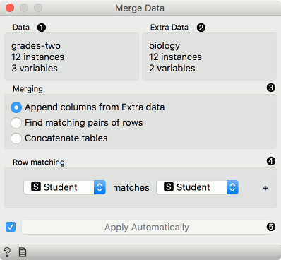
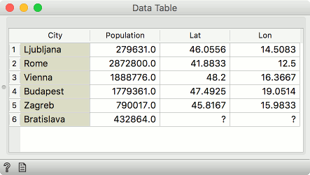
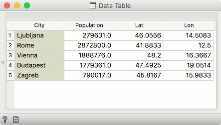
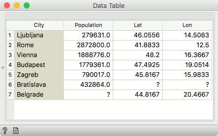
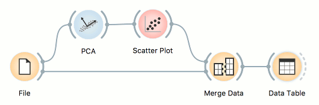
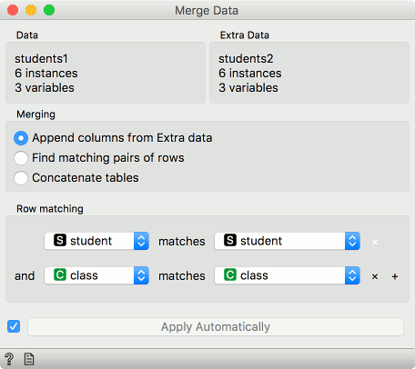
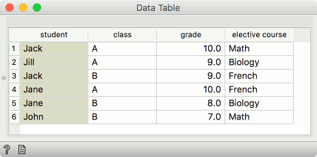
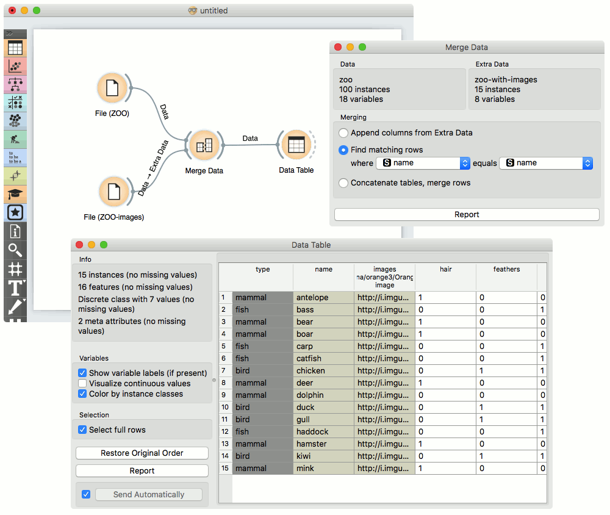
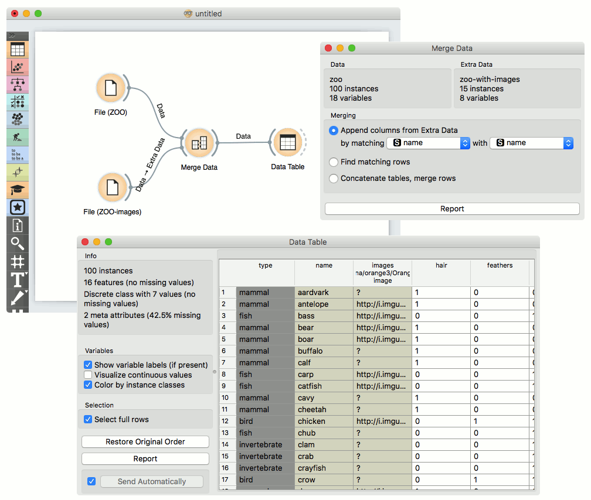
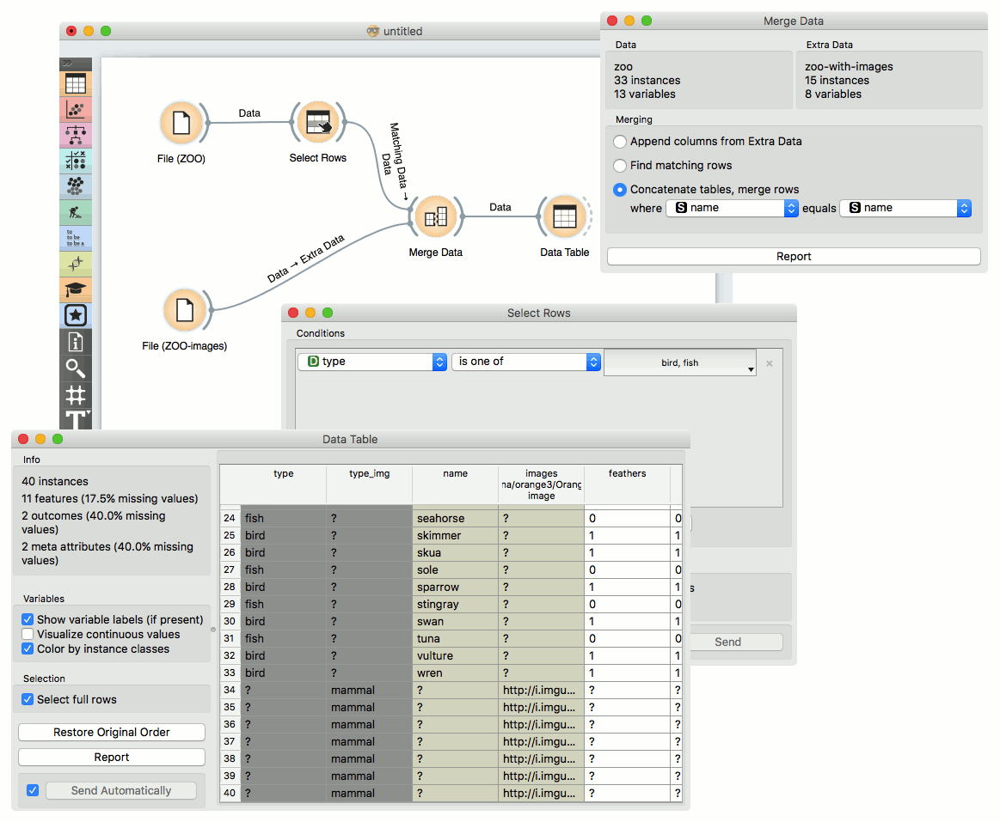

Merge Data
Merges two datasets, based on values of selected attributes.
Inputs
- Data: input dataset
- Extra Data: additional dataset
Outputs
- Data: dataset with features added from extra data
The Merge Data widget is used to horizontally merge two datasets, based on the values of selected attributes (columns). In the input, two datasets are required, data and extra data. Rows from the two data sets are matched by the values of pairs of attributes, chosen by the user. The widget produces one output. It corresponds to the instances from the input data to which attributes (columns) from input extra data are appended.
If the selected attribute pair does not contain unique values (in other words, the attributes have duplicate values), the widget will give a warning. Instead, one can match by more than one attribute. Click on the plus icon to add the attribute to merge on. The final result has to be a unique combination for each individual row.

- Information on main data.
- Information on data to append.
- Merging type:
- Append columns from Extra Data outputs all rows from the Data, augmented by the columns in the Extra Data. Rows without matches are retained, even where the data in the extra columns are missing.
- Find matching pairs of rows outputs rows from the Data, augmented by the columns in the Extra Data. Rows without matches are removed from the output.
- Concatenate tables treats both data sources symmetrically. The output is similar to the first option, except that non-matched values from Extra Data are appended at the end.
- List of attributes from Data input.
- List of attributes from Extra Data input.
- Produce a report.
Merging Types
#####Append Columns from Extra Data (left join)
Columns from the Extra Data are added to the Data. Instances with no matching rows will have missing values added.
For example, the first table may contain city names and the second would be a list of cities and their coordinates. Columns with coordinates would then be appended to the data with city names. Where city names cannot be matched, missing values will appear.
In our example, the first Data input contained 6 cities, but the Extra Data did not provide Lat and Lon values for Bratislava, so the fields will be empty.

#####Find matching pairs of rows (inner join)
Only those rows that are matched will be present on the output, with the Extra Data columns appended. Rows without matches are removed.
In our example, Bratislava from the Data input did not have Lat and Lon values, while Belgrade from the Extra Data could not be found in the City column we were merging on. Hence both instances are remove - only the intersection of instances is sent to the output.

#####Concatenate tables (outer join)
The rows from both the Data and the Extra Data will be present on the output. Where rows cannot be matched, missing values will appear.
In our example, both Bratislava and Belgrade are now present. Bratislava will have missing Lat and Lon values, while Belgrade will have a missing Population value.

#####Row index
Data will be merged in the same order as they appear in the table. Row number 1 from the Data input will be joined with row number 1 from the Extra Data input. Row numbers are assigned by Orange based on the original order of the data instances.
#####Instance ID
This is a more complex option. Sometimes, data in transformed in the analysis and the domain is no longer the same. Nevertheless, the original row indices are still present in the background (Orange remembers them). In this case one can merge on instance ID. For example if you transformed the data with PCA, visualized it in the Scatter Plot, selected some data instances and now you wish to see the original information of the selected subset. Connect the output of Scatter Plot to Merge Data, add the original data set as Extra Data and merge by Instance ID.

#####Merge by two or more attributes
Sometimes our data instances are unique with respect to a combination of columns, not a single column. To merge by more than a single column, add the Row matching condition by pressing plus next to the matching condition. To remove it, press the x.
In the below example, we are merging by student column and class column.

Say we have two data sets with student names and the class they’re in. The first data set has students’ grades and the second on the elective course they have chosen. Unfortunately, there are two Jacks in our data, one from class A and the other from class B. Same for Jane.
To distinguish between the two, we can match rows on both, the student’s name and her class.

Examples
Merging two datasets results in appending new attributes to the original file, based on a selected common attribute. In the example below, we wanted to merge the zoo.tab file containing only factual data with zoo-with-images.tab containing images. Both files share a common string attribute names. Now, we create a workflow connecting the two files. The zoo.tab data is connected to Data input of the Merge Data widget, and the zoo-with-images.tab data to the Extra Data input. Outputs of the Merge Data widget is then connected to the Data Table widget. In the latter, the Merged Data channels are shown, where image attributes are added to the original data.

The case where we want to include all instances in the output, even those where no match by attribute names was found, is shown in the following workflow.

The third type of merging is shown in the next workflow. The output consists of both inputs, with unknown values assigned where no match was found.
